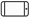
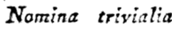
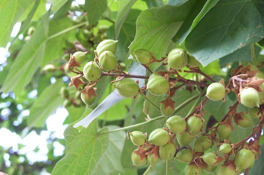
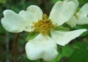
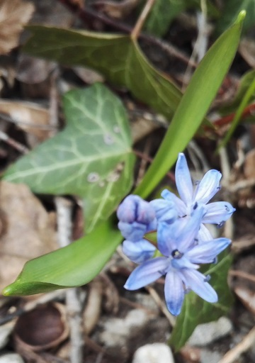
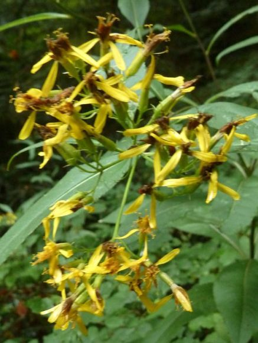
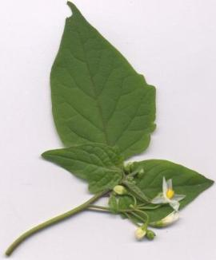
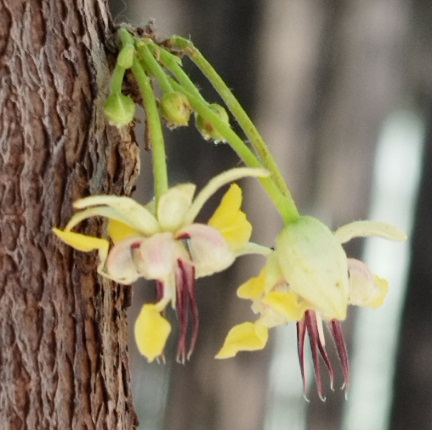
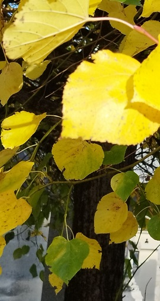

Noms latinsNoms françaisNoms vernaculairesSynonymesLe genre grammatical en BotaniqueCodes de nomenclature
Index
des noms latins des fleurs
et autres êtres vivants

de Linné
 O
O
Noms latins
- Odontites vernus
Oenanthe fistulosa
Oenanthe silaifolia
Oenothera biennis
Omalotheca sylvatica
Onobrychis viciifolia
Ononis natrix
Ononis spinosa subsp. procurrens
Onopordum acanthium
Ophioglossum vulgatum
Ophrys apifera
Ophrys apifera var. apifera et aurita
Ophrys aranifera
Ophrys fuciflora
Ophrys insectifera
Ophrys virescens
Orchis anthropophora
Orchis mascula
Orchis militaris
Orchis purpurea
Orchis simia
Origanum vulgare
Ornithogalum pyrenaicum
Ornithogalum umbellatum
Ornithogalum pyrenaicum
(syn. Loncomelos pyrenaicum),
12-05-2014 - © Claire Martin-Lucy
Ornithopus perpusillus
Orobanche sp.
Orobanche alba
Orobanche alsatica
Orobanche amethystea
Orobanche hederae
Orobanche picridis-hieracioidis
Orobanche rapum-genistae
Orthilia secunda
Osmunda regalis
Oxalis acetosella
Oxalis corniculata
Oxalis stricta
Oxybasis urbica
P
Noms latins
- Paeonia mascula
Papaver dubium
Papaver rhoeas
Papaver somniferum
Parietaria judaica
Paris quadrifolia
Parnassia palustris
Parthenocissus tricuspidata
Pastinaca sativa
Paulownia tomentosa

Dijon, 11 juillet 2010 Pedicularis sylvatica
Pentanema salicinum
Pentanema squarrosum
Persicaria hydropiper
Persicaria lapathifolia
Persicaria maculosa
Petasites hybridus
Petasites pyrenaicus
Petrosedum rupestre
Peucedanum gallicum
Peucedanum oreoselinum
Peucedanum palustre
Phacelia tanacetifolia
Phalaris arundinacea
Phelipanche purpurea
Phleum pratense
Pholcus phalangioides
Phragmites australis
Phyllanthus acidus
Phyteuma orbiculare
Phyteuma spicatum
Phytolacca americana
Picea abies
Picris hieracioides
Pilosella caespitosa
Pilosella officinarum
Pilularia globulifera
Pimpinella saxifraga
Pinus nigra
Pinus pinaster
Lucy-sur-Cure, 3 avril 2019
Pinus strobus
Pinus sylvestris
Plagiomnium undulatum
Plantago lanceolata
Plantago major
Plantago media
Platanthera bifolia
Platanthera chlorantha
Platanus x hispanica
Poa annua
Poa nemoralis
Poa trivialis
Polygala amarella
Polygala calcarea
Polygala vulgaris
Polygonatum multiflorum
Polygonatum odoratum
Polygonum aviculare
Polypodium vulgare
Polystichum aculeatum
Polytrichum formosum
Populus alba
Populus tremula
Portulaca oleracea
Potamogeton crispus
Potentilla argentea
Potentilla erecta
Potentilla reptans
Potentilla sterilis
Potentilla verna
Primula x anglica
Primula elatior
Primula veris
Prospero autumnale
Primula veris et Primula elatior
Prostanthera cuneata
Prunella grandiflora
Prunella laciniata
Prunella vulgaris
Prunus avium
Prunus mahaleb
Prunus spinosa
Psammophiliella muralis
Pseudofumaria lutea
Pseudotsuga menziesii
Pteridium aquilinum
Pulicaria dysenterica
Pulmonaria longifolia
Pulsatilla vulgaris
Pyrola chlorantha
Pyrus communis subsp. pyraster
Q
Noms latins
- Quercus ilex
Quercus macrocarpa
Quercus ilex plus que bicentenaire
Ivry-sur-Seine (Val de Marne), 12 novembre 2026
Quercus petraea
Quercus robur
Quercus rubra
Quercus x kerneri
R
Noms latins
- Ramalina farinacea
Ramalina fastigiata
Ramalina fraxinea
Ranunculus aconitifolius
Ranunculus acris
Ranunculus auricomus
Ranunculus bulbosus
Ranunculus ficaria
Ranunculus flammula
Ranunculus fluitans
Ranunculus gramineus
Ranunculus lingua
Ranunculus ophioglossifolius
Ranunculus repens
Ranunculus sardous
Ranunculus sceleratus
Ranunculus trichophyllus
Raphanus raphanistrum
Reseda lutea
Reseda luteola
Reynoutria japonica
Rhamnus cathartica
Rhinanthus alectorolophus
Rhinanthus minor
Rhus typhina
Ribes rubrum
Robinia pseudoacacia
Rorippa amphibia
Rorippa sylvestris
Rosa arvensis

Rosa canina
Rubia peregrina
Rubus caesius
Rubus canescens
Rumex acetosa
Rumex acetosella
Rumex crispus
Rumex obtusifolius
Rumex sanguineus
Ruscus aculeatus
Ruta graveolens
S
Noms latins
- Sabulina tenuifolia
Sagittaria sagittifolia
Salix caprea
Salix cinerea
Salix caprea, saule marsault,
Paris, Buttes Chaumont, 3 mars 2026
Salix fragilis
Salix purpurea
Salix repens
Salvia pratensis
Sambucus ebulus
Sambucus nigra
Sambucus racemosa
Sanguisorba minor
Sanguisorba officinalis
Sanicula europaea
Saponaria officinalis
Saxifraga granulata
Saxifraga tridactylites
Scabiosa columbaria
Scandix pecten-veneris
Schedonorus arundinaceus
Schoenoplectus lacustris
Schoenus nigricans
Scilla bifolia

Scirpus sylvaticus
Scorzonera humilis
Scrophularia auriculata
Scrophularia nodosa
Scutellaria galericulata
Scytodes thoracica
Sedum acre
Sedum album
Sempervivum tectorum
Senecio inaequidens
Senecio ovatus

Senecio vulgaris
Serratula tinctoria
Seseli montanum
Sesleria caerulea
Setaria viridis
Sherardia arvensis
Silaum silaus
Silene baccifera
Silene dioica
Silene flos-cuculi
Silene latifolia
Silene nutans
Silene vulgaris
Silybum marianum
Sison amomum
Sisymbrium irio
Sisymbrium loeselii
Sisymbrium officinale
Solanum dulcamara
Solanum nigrum

Solidago canadensis
Solidago gigantea
Solidago virgaurea
Sonchus arvensis
Sonchus asper
Sonchus oleraceus
Sorbus aucuparia
Sparganium emersum
Sparganium erectum
Spergula arvensis
Spergularia marina
Spergularia rubra
Sphagnum palustre
Spiranthes spiralis
Stachys alpina
Stachys palustris
Stachys recta
Stachys sylvatica
Stellaria alsine
Stellaria graminea
Stellaria holostea
Stellaria media
Stellaria nemorum
Stipa pennata
Struthiopteris spicant
Succisa pratensis
Symphytum officinale

T
Noms latins
- Tanacetum vulgare
Taraxacum campylodes
Taraxacum officinale
Taraxacum udum
Taxus baccata
Tebenna bjerkandrella
Teesdalia nudicaulis
Teucrium botrys
Teucrium chamaedrys
Teucrium montanum
Teucrium scorodonia
Thalictrum flavum
Thelypteris palustris
Theobroma cacao

Paris, 19 septembre 2026
Serres du Jardin du Luxembourg Thesium humifusum
Thymus praecox
Tilia cordata

Cimetière du Montparnasse,
Paris, 14 octobre 2025 Tilia platyphyllos
Tordylium maximum
Torilis arvensis
Torilis japonica
Torilis nodosa
Tragopogon porrifolius
Tragopogon pratensis
Tragus racemosus
Trifolium arvense
Trifolium campestre
Trifolium dubium
Trifolium fragiferum
Trifolium pratense
Trifolium repens
Trifolium rubens
Trinia glauca
Tripleurospermum inodorum
Tuberaria guttata
Tulipa sylvestris subsp. sylvestris
Tussilago farfara
Typha latifolia
U
Noms latins
V
Noms latins
- Vaccinium myrtillus
Valeriana officinalis
Valerianella locusta
Valerianella locusta f. carinata
Vanilla planifolia
Verbascum blattaria
Verbascum densiflorum
Verbascum lychnitis
Verbascum nigrum
Verbascum pulverulentum
Verbascum thapsus
Verbena officinalis
Veronica agrestis
Veronica anagallis-aquatica
Veronica beccabunga
Veronica chamaedrys
Veronica hederifolia
Veronica montana
Veronica officinalis
Veronica persica
Veronica praecox
Veronica scutellata
Veronica serpyllifolia
Viburnum lantana
Viburnum opulus
Vicia angustifolia
Vicia cracca
Vicia hirsuta
Vicia sativa
Vicia sativa subsp. nigra
Vicia sepium
Vicia tetrasperma
Vicia villosa
Vinca major
Vinca minor
Vincetoxicum hirundinaria
Viola arvensis
Viola cryana
Viola hirta
Viola odorata
Viola palustris
Viola persicifolia
Viola reichenbachiana
Viola riviniana
Le Pont Evrat, 20-04-2018
© Daniel Bourget
Viola tricolor
Viscum album
Vitis vinifera
Vitis vinifera subsp. sylvestris
X
Noms latins
Z
Noms latins
Pour trouver un nom latin :
Noms latinsNoms françaisNoms vernaculairesSynonymesLe genre grammatical en BotaniqueCodes de nomenclature
 | |